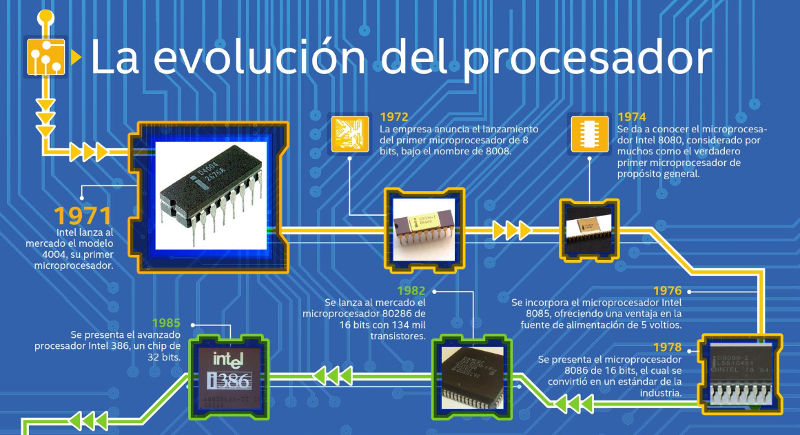

HISTORIA DEL PROCESADOR

Los procesadores han recorrido un largo camino desde sus inicios, pasando de enormes máquinas a chips ultra potentes que caben en la palma de la mano.
LINEA DEL TIEMPO RESUMIDA
- 1971-Intel4004: El primer microprocesador del mundo. Solo tenía 1 núcleo y trabajaba con 4 bits.
- Décadas de 1980 y 1990: Aparecen procesadores como el Intel 8086 y la serie Pentium, con mayor velocidad y soporte para gráficos, multitarea y más RAM.
- 2000 – Multinúcleo: Surgen los procesadores con 2, 4 y más núcleos, mejorando el rendimiento en tareas simultáneas.
- 2010 en adelante – Avances en movilidad: Nacen los procesadores para smartphones y laptops delgadas, como los ARM y Snapdragon.
- 2020 – Procesadores con IA: Chips como Apple M1/M2, Ryzen 7000 o Intel Core Ultra integran inteligencia artificial, menor consumo energético y gran potencia.
CURIOSIDAD
El primer procesador Intel 4004 tenía solo 2.300 transistores. Hoy, procesadores modernos como el Apple M3 pueden tener más de 25 mil millones.